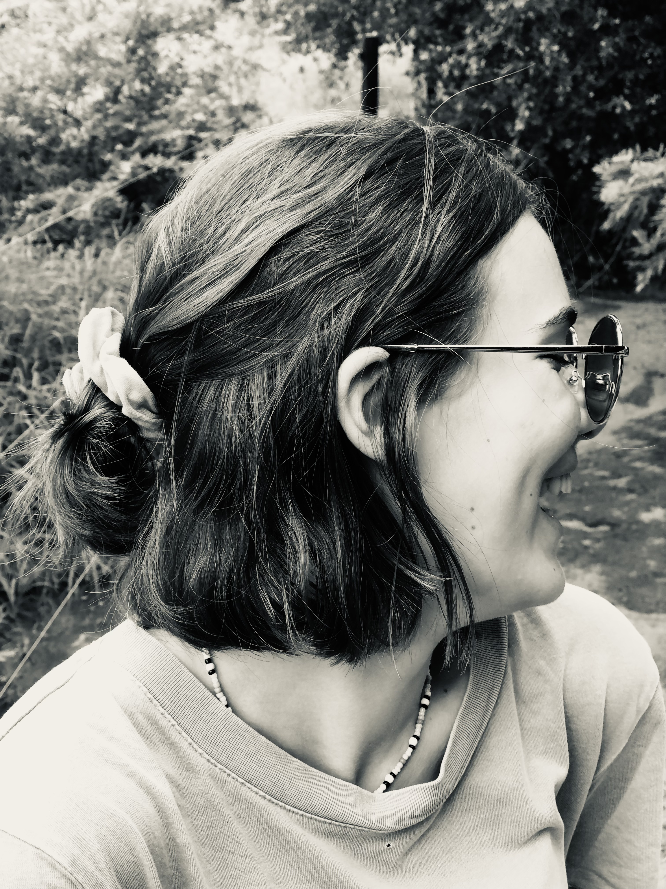
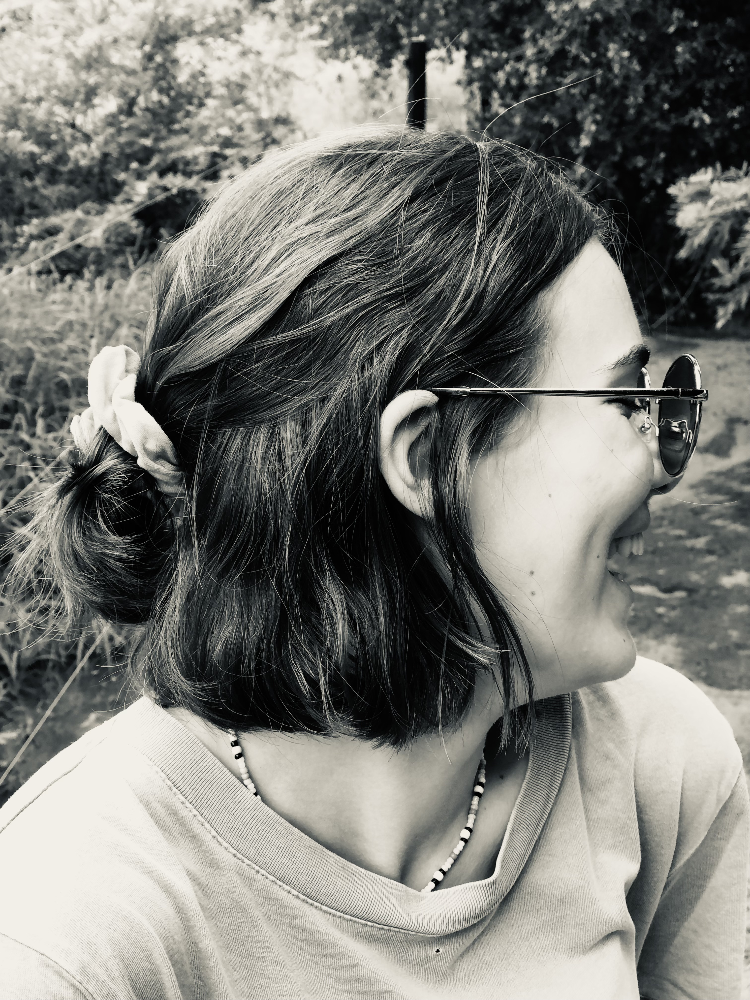
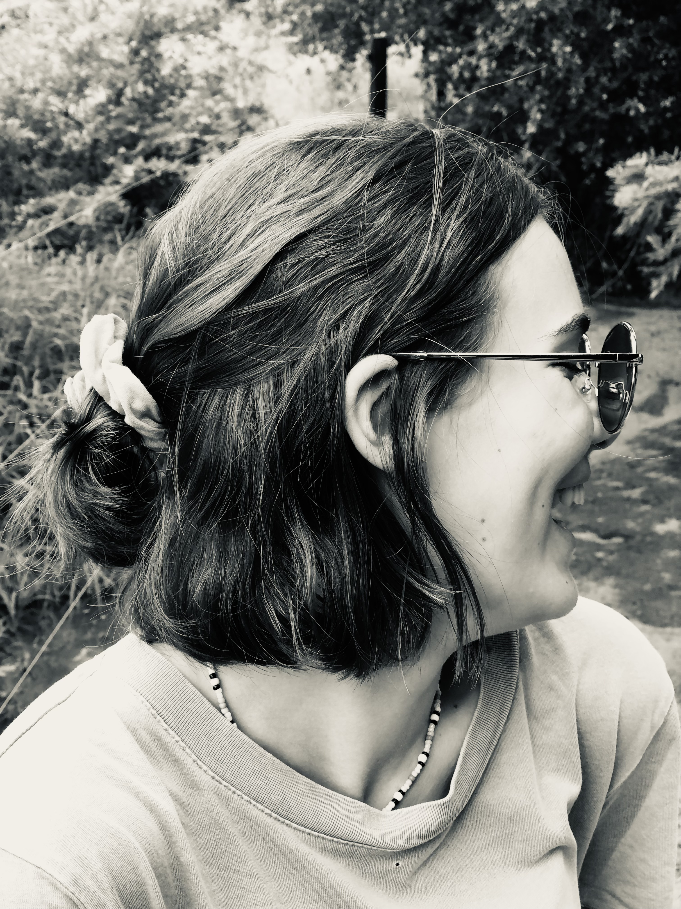

Follow along on Instagram :)
rebekah_howell_art 



Art has always been my love language - a way to express my thoughts I couldn't quite put into words. My wok is inspired by the simple beauty in everyday moments: the smile of my grandmother, the play of light coming in from the window, the detail of memories.
I draw inspiration from my surroundings, memories, and relational connections. Each artwork I produce is rooted in something personal to me, yet open to show others their own stories and memories in it. I believe art should be felt and not just seen as a visual representation of a moment.
Charcoal has a sense of something so beautifully raw and honest. I am enriched by its depth and intimacy - in the way it allows me to work with both clarity and freedom.
Using charcoal allows me to blend, smudge, and build an aura of textures in ways that reflect the complexity of the experience being expressed. Every mark carries weight. Every shade tells a story.
Charcoal isn't just a material - it is a conversation between force, motion, and feeling. It gives me space to express both the creative and the dramatic, making a perfect match for my creative voice.

Every work of mine begins long before the charcoal touches the paper. Sometimes it starts with an image, a memory, or just a feeling I can't grasp. I carry this idea - thinking about its meaning, its weight, and its shape.
When I draw I let my intuition guide me. I sketch freely at first, letting the lines interwine with one another. I work in layers - first building, then smudging, erasing, and then reworking. Because the process is what makes the final image.
I use charcoal as it allows for depth and softness to balance each other out. My hands are always covered in charcoal dust, and I love feeling one with the art pieces. It is physical, emotional, and messy in the most beautiful way.
There is always a moment when the pieces start falling togther and speaking back to me - where the artwork feels alive. That is when I know my job is almost done. The artwork is not perfect, but it is real and holds so much meaning.
